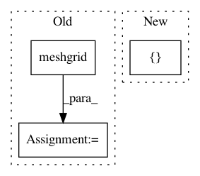

1401e8bd2bdbccbedb696bd742e4934d5ba96fcb,tests/test_clustersupervisor.py,,,#,9
Before Change
pytest.skip("Clustersupervisor is currently broken.", allow_module_level=True)
TEST_DF = pd.DataFrame(np.meshgrid(np.arange(20), np.arange(20))[0])
TEST_SERIES = pd.Series(np.arange(20))
TEST_ARRAY = np.arange(20)
TEST_LIST = list(range(20))
TEST_CLUSTERS = np.array(([1] * 10) + ([2] * 10))
TEST_LABELS_STR = {"1.2", "2.2"}
TEST_LABELS_NUM = {1.2, 2.2}
TEST_LABELS_CHAR = {"hello1", "hello2"}
data_opts = [TEST_DF, TEST_SERIES, TEST_ARRAY, TEST_LIST]
label_opts = [TEST_LABELS_NUM, TEST_LABELS_STR, TEST_LABELS_CHAR]
@pytest.mark.parametrize(
After Change
from superintendent import ClusterSupervisor
TEST_ARRAY = np.array([[1, 2, 3], [1, 2, 3], [1, 2, 3], [1, 2, 3]])
TEST_LABELS = np.array([1, 1, 2, 2])
TEST_REPRESENTATIVENESS = np.array([0.5, 0.4, 0.6, 0.9])
In pattern: SUPERPATTERN
Frequency: 4
Non-data size: 3
Instances
Project Name: janfreyberg/superintendent
Commit Name: 1401e8bd2bdbccbedb696bd742e4934d5ba96fcb
Time: 2018-10-31
Author: janfreyberg@users.noreply.github.com
File Name: tests/test_clustersupervisor.py
Class Name:
Method Name:
Project Name: broadinstitute/keras-rcnn
Commit Name: df93c4e61e7ca1db25f1ee346ac0516685498b02
Time: 2017-08-15
Author: allen.goodman@icloud.com
File Name: keras_rcnn/backend/tensorflow_backend.py
Class Name:
Method Name: shift
Project Name: SheffieldML/GPy
Commit Name: 7d9352c7330d9c826c21c9e8f8cb4aee930037b5
Time: 2013-04-28
Author: james.hensman@gmail.com
File Name: GPy/kern/coregionalise.py
Class Name: coregionalise
Method Name: dK_dtheta
Project Name: SheffieldML/GPy
Commit Name: 7d9352c7330d9c826c21c9e8f8cb4aee930037b5
Time: 2013-04-28
Author: james.hensman@gmail.com
File Name: GPy/kern/coregionalise.py
Class Name: coregionalise
Method Name: K